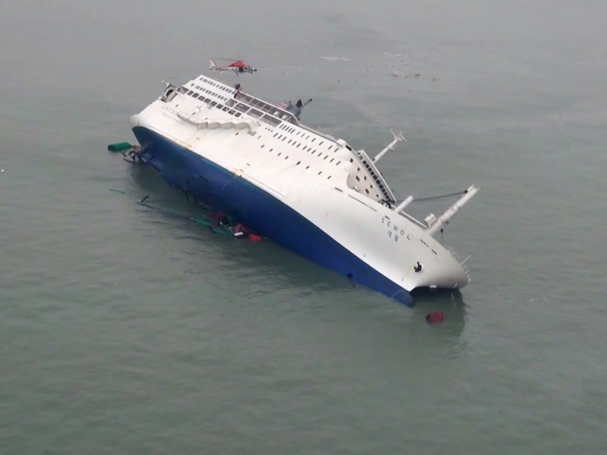

The sewol ferry disaster happened on April 16, 2014. The ferry sunk resulting to the death of 304 people, including staff and students. The students from Danwon High School were on their way to have a trip in Jeju Island when this incident happened. The media and the people in power tried to hide the truth about this because it was poorly handled and may cause damage to Korea’s reputation. It was believed that the passengers could’ve been saved. When the boat was sinking, the crew told the passengers to just stay put in their cabins. On the other hand, the captain and other officials had escaped. The passengers just obeyed the crews, but it costed them their lives.
Tap the picture to know more about the tragedy
Each of the members and their company donated to the organization related to the families of the victims. They donated a total of 100 million Korean won privately in January of 2017. BTS also made a song and music video related to the sinking of the Sewol Ferry back on the same year. This song is titled Spring Day. It showed the feelings of the survivors’ guilt and the longing of the families of the victims.
BTS have helped many people through their songs. The meanings behind the lyrics gave comfort and hope to their listeners. Just like the title of the series, this era promotes self-love. It shows the journey of the boys in finding what love truly means.
Don't worry, love
None of this is a coincidence
We're totally different, baby
Because we're the two who found our destiny
-DNA by BTS
‘Her’ is described as a coming-of-age tale. It’s about the young boys experiencing love for the first time. The songs from this album express the sweet feeling of happiness from love that is new to them. This album also shows their experiences while growing up and tackles issues related to our society today.
Love Yourself: Her contains 9 tracks - Intro: Serendipity, DNA, Best of Me, Dimple, Pied Piper, Skit: Billboard Music Awards Speech, MIC Drop, Go Go, Outro: Her” and 2 hidden tracks that are only available in the physical album - “Skit: Hesitation and Fear, Sea”. The physical albums have 4 versions: L, O, V, E
RM participated in writing “Intro: Serendipity, DNA, Best of Me, Dimple, Pied Piper, MIC Drop, Outro: Her, Sea” and producing “Sea”. Suga helped in composing “DNA, Best of Me, Pied Piper, Outro: Her, Sea” and produced “Outro: Her”. J-hope helped in writing “Best of Me, Pied Piper, MIC Drop, Outro: Her, Sea".
"I gave the world, just for you
I changed everything, just for you
But I don't know me,
Who are you?”
- Fake Love by BTS
“Have I lost myself, or have I gained you?”
- Intro: Singularity
The Love Yourself: Tear album shows the pain that the boys experienced from this love. How they lost their selves and changed because of the person they love. This album also shows how love is not perfect and not just full of hapiness as it seems.
The album consists of 9 tracks of 11 tracks - “Intro: Singularity, Fake Love, The Truth Untold, 134340, Paradise, Love Maze, Magic Shop, Airplane Pt. 2, Anpanman, So What, Outro: Tear”. Its physical album has 4 versions: Y, O, U, R.
The members helped in writing the tracks of these songs. RM helped in writing all of the tracks, Suga in “134340, Paradise, Love Maze, Magic Shop, Airplane Pt. 2, Anpanman, So What, Outro: Tear”, and J-hope in “134340, Paradise, Love Maze, Magic Shop, Airplane Pt. 2, So What, Outro: Tear”. Jungkook participated in composing and producing “Magic Shop”.
”Loving myself might be harder Than loving someone else,
let's admit it The standards you made are stricter for yourself”
&
“The me of yesterday
The me of today
The me of tomorrow
I'm learning how to love myself
With no exceptions, it's all me”
- Answer: Love Myself by BTS
“You can't stop me lovin' myself”
- Idol by BTS
In this album, the boys finally realized what true love is. It is the love for one’s self. That in order for us to truly love others, we should learn how to love ourselves first. We should also accept the mistakes we did from the past and learn from it as it’ll forever be part of our identity.
Love Yourself: Answer is a repackaged album with 4 versions; S, E, L, F. The tracklist of this album contains new song, as songs from the previous albums of series -“Her” and “Tear”, and remixes. It contains 2 CDs. CD A has 16 tracks -”Euphoria, Trivia 起: Just Dance, Serendipity (Full Length Edition), DNA, Dimple, Trivia 承: Love, Her, Singularity, Fake Love, The Truth Untold (Feat. Steve Aoki), Trivia 轉: Seesaw, Tear, Epiphany, I'm Fine, IDOL, Answer: Love Myself”, while CD B has 9 - “Magic Shop, Best Of Me, Airplane pt.2, Go Go, Anpanman, MIC Drop, DNA (Pedal 2 LA Mix), Fake Love (Rocking Vibe Mix), MIC Drop (Full Length Edition) and a digital bonus track of “Idol ft. Nicki Minaj”.
BTS also participated in making the songs from this repackage. RM helped in writing “Euphoria, Serendipity (Full Length Edition), DNA, Dimple, Trivia 承: Love, Her, Singularity, Fake Love, The Truth Untold (Feat. Steve Aoki), Tear, I'm Fine, IDOL, Answer: Love Myself, Magic Shop, Best Of Me, Airplane pt.2, MIC Drop, DNA (Pedal 2 LA Mix), Fake Love (Rocking Vibe Mix), MIC Drop (Full Length Edition), Idol ft. Nicki Minaj“
Three percent (3%) of the sales from all of the albums of the Love Yourself series was donated to the Love Myself campaign.
On November 1, 2017, The Love Myself campaign was launched by BTS and Bighit in partnership with UNICEF. According to the Love Myself organization, it promotes the #ENDviolence campaign and raises funds to support the program. #ENDviolence aims to prevent violence and give protection to young people, teens, and women. The group and the company donated a total of 500 million won for this campaign and another 500,000 dollars each year. 3% of the sales from all of the albums of the Love Yourself series was donated to the Love Myself campaign. A line of products was also released and 100% of the proceeds went to support the campaign.
The Black Lives Matter movement or BLM spreads awareness about the discrimination and brutality that black people are experiencing in this society especially in the United States. On May of 2020, George Floyd, an African-American, was subjected to violence and murdered by police officers while getting arrested for suspected theft. This started the protests which fought against racism and police brutality.
BTS and their label made a donation of 1 million dollar for this movement on June of the same year. They also made a post about their support on the Black Lives Matter movement on their twitter account. According to Suga on their interview on Variety (2020): “Ours are initiatives that any person who wishes to live in a just world would want to pursue. We aren’t trying to send out some grandiose message.”. However, this inspired their fans, the ARMY, to match their donation raising over 1 million dollar for the campaign in less than 24 hours after BTS made theirs.